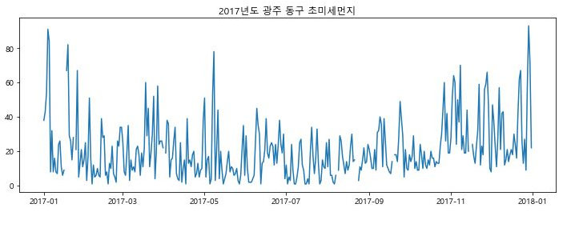

평균기온과 미세먼지 상관관계 그래프
17년 2월부터 비상저감조치 시행
비상저감조치란?
당일 17시 기준 수도권(서울·인천·경기도)에서 2개 시·도 이상 아래의 조건을 충족할 경우 시행됩니다.
당일 0~16시 PM-2.5 평균 농도가 50㎍/㎥ 초과, 다음날 24시간 평균 농도가 50㎍/㎥ 초과 예측
당일 0~16시 사이 경보권역중 한곳 이상 PM-2.5 주의보 또는 경보 발령, 다음날 24시간 평균 농도가 50㎍/㎥ 초과 예측
다음날 PM-2.5 24시간 평균 농도 75㎍/㎥ 초과 예측
미세먼지 주의보,경보 발생횟수와 일수
2017년도 미세먼지 주의보 발령횟수:6
2017년도 미세먼지 주의보 발령일수:10
2017년도 미세먼지 경보 발령횟수:0
2017년도 미세먼지 경보 발령횟수:0